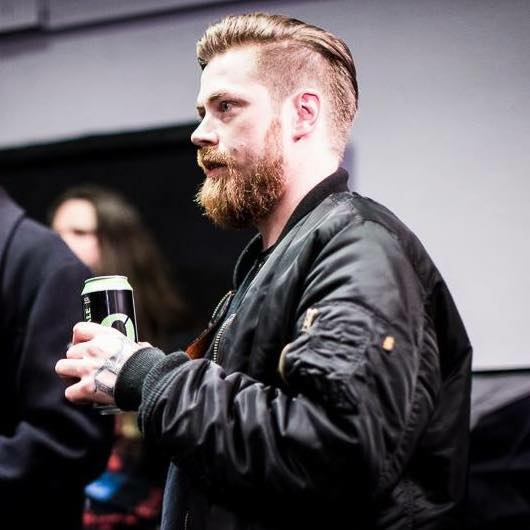

Noah Sebastian
1995.10.31
Énekes, fő dalszerző
Frontman of Bad Omens
2015-
Noah Sebastian különlegessége, hogy tiszta éneket és screamet is használ, valamint sokszor a zenekar dalainak produkciójában is részt vesz.

Joakim Karlsson
1988.04.27
Lead Guitarist
Songwriter
2015-
Különlegessége, hogy gitárosként fontos szerepe van a zenekar hangzásának kialakításában, a heavy riffektől a dallamos részekig, és több dal megírásában is részt vesz.
Nicholas Ruffilo
1987.07.17
Guitarist
Backing vocals
2015-
Különlegessége, hogy gitárjátékával és háttérvokáljával támogatja a zenekar élő fellépéseit, valamint energikus színpadi jelenlétével erősíti a koncertélményt.

Nick Folio
1998.07.17
Drummer
Percussion
2015-
Különlegessége, hogy technikás és erőteljes dobolásával adja a dalok alapritmusát, amely egyszerre dinamikus és precíz.